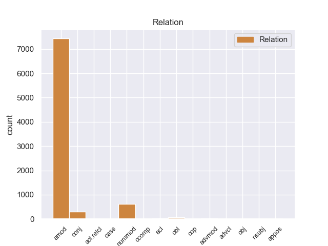
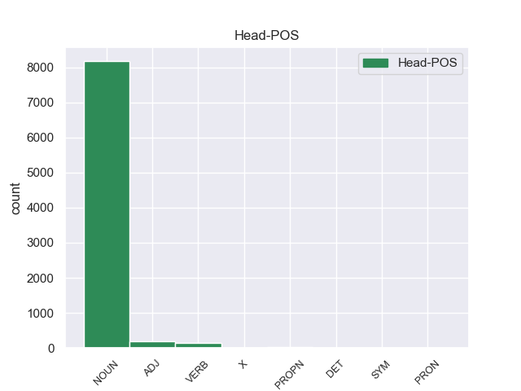
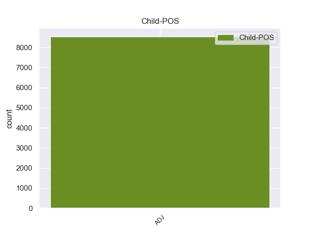

Distribution of features within this leaf



Agreement Rules sorted by frequency.
- When the dependent token is the adjectival modifier(amod) of the head token, and the dependent token is ADJ.
1 En _ _ _ _ 0 _ _ _
2 1991 _ _ _ _ 0 _ _ _
3 , _ _ _ _ 0 _ _ _
4 como _ _ _ _ 0 _ _ _
5 ya _ _ _ _ 0 _ _ _
6 está _ _ _ _ 0 _ _ _
7 indicado _ _ _ _ 0 _ _ _
8 en _ _ _ _ 0 _ _ _
9 el _ _ _ _ 0 _ _ _
10 párrafo _ _ _ _ 0 _ _ _
11 anterior _ _ _ _ 0 _ _ _
12 , _ _ _ _ 0 _ _ _
13 se _ _ _ _ 0 _ _ _
14 creó _ _ _ _ 0 _ _ _
15 un _ _ _ _ 0 _ _ _
16 equipo equipo NOUN _ Gender=Masc|Number=Sing 0 _ _ _
17 ad _ _ _ _ 0 _ _ _
18 hoc hoc ADJ _ Gender=Masc|Number=Sing 16 amod _ _
19 para _ _ _ _ 0 _ _ _
20 averiguar _ _ _ _ 0 _ _ _
21 como _ _ _ _ 0 _ _ _
22 se _ _ _ _ 0 _ _ _
23 podía _ _ _ _ 0 _ _ _
24 desarrollar _ _ _ _ 0 _ _ _
25 el _ _ _ _ 0 _ _ _
26 Dialogo _ _ _ _ 0 _ _ _
27 Social _ _ _ _ 0 _ _ _
28 , _ _ _ _ 0 _ _ _
29 este _ _ _ _ 0 _ _ _
30 equipo _ _ _ _ 0 _ _ _
31 estaba _ _ _ _ 0 _ _ _
32 formado _ _ _ _ 0 _ _ _
33 por _ _ _ _ 0 _ _ _
34 representantes _ _ _ _ 0 _ _ _
35 de _ _ _ _ 0 _ _ _
36 todas _ _ _ _ 0 _ _ _
37 las _ _ _ _ 0 _ _ _
38 organizaciones _ _ _ _ 0 _ _ _
39 relacionadas _ _ _ _ 0 _ _ _
40 con _ _ _ _ 0 _ _ _
41 CES _ _ _ _ 0 _ _ _
42 , _ _ _ _ 0 _ _ _
43 UNICE _ _ _ _ 0 _ _ _
44 y _ _ _ _ 0 _ _ _
45 CEEP _ _ _ _ 0 _ _ _
46 ; _ _ _ _ 0 _ _ _
1 Ahora _ _ _ _ 0 _ _ _
2 se _ _ _ _ 0 _ _ _
3 aunan _ _ _ _ 0 _ _ _
4 cocina _ _ _ _ 0 _ _ _
5 y _ _ _ _ 0 _ _ _
6 entorno _ _ _ _ 0 _ _ _
7 , _ _ _ _ 0 _ _ _
8 me _ _ _ _ 0 _ _ _
9 encanto _ _ _ _ 0 _ _ _
10 la _ _ _ _ 0 _ _ _
11 bodega _ _ _ _ 0 _ _ _
12 , _ _ _ _ 0 _ _ _
13 las _ _ _ _ 0 _ _ _
14 sillas _ _ _ _ 0 _ _ _
15 son _ _ _ _ 0 _ _ _
16 comodisimas _ _ _ _ 0 _ _ _
17 , _ _ _ _ 0 _ _ _
18 la _ _ _ _ 0 _ _ _
19 iluminacion _ _ _ _ 0 _ _ _
20 es _ _ _ _ 0 _ _ _
21 excepcional _ _ _ _ 0 _ _ _
22 , _ _ _ _ 0 _ _ _
23 alcanzas _ _ _ _ 0 _ _ _
24 un _ _ _ _ 0 _ _ _
25 grado _ _ _ _ 0 _ _ _
26 de _ _ _ _ 0 _ _ _
27 satisfaccion _ _ _ _ 0 _ _ _
28 que _ _ _ _ 0 _ _ _
29 no _ _ _ _ 0 _ _ _
30 se _ _ _ _ 0 _ _ _
31 puede _ _ _ _ 0 _ _ _
32 describir _ _ _ _ 0 _ _ _
33 , _ _ _ _ 0 _ _ _
34 hay _ _ _ _ 0 _ _ _
35 que _ _ _ _ 0 _ _ _
36 probar _ _ _ _ 0 _ _ _
37 lo _ _ _ _ 0 _ _ _
38 , _ _ _ _ 0 _ _ _
39 es _ _ _ _ 0 _ _ _
40 la _ _ _ _ 0 _ _ _
41 primera primera ADJ _ Gender=Fem|Number=Sing 42 nummod _ _
42 vez vez NOUN _ Gender=Fem|Number=Sing 0 _ _ _
43 en _ _ _ _ 0 _ _ _
44 mi _ _ _ _ 0 _ _ _
45 vda _ _ _ _ 0 _ _ _
46 que _ _ _ _ 0 _ _ _
47 una _ _ _ _ 0 _ _ _
48 cocina _ _ _ _ 0 _ _ _
49 me _ _ _ _ 0 _ _ _
50 emociona _ _ _ _ 0 _ _ _
51 hasta _ _ _ _ 0 _ _ _
52 ese _ _ _ _ 0 _ _ _
53 punto _ _ _ _ 0 _ _ _
54 . _ _ _ _ 0 _ _ _
1 Jazmin _ _ _ _ 0 _ _ _
2 es _ _ _ _ 0 _ _ _
3 todo _ _ _ _ 0 _ _ _
4 lo _ _ _ _ 0 _ _ _
5 contrario _ _ _ _ 0 _ _ _
6 , _ _ _ _ 0 _ _ _
7 es _ _ _ _ 0 _ _ _
8 tímida tímida ADJ _ Gender=Fem|Number=Sing 0 _ _ _
9 y _ _ _ _ 0 _ _ _
10 callada callada ADJ _ Gender=Fem|Number=Sing 8 conj _ _
11 , _ _ _ _ 0 _ _ _
12 pero _ _ _ _ 0 _ _ _
13 siempre _ _ _ _ 0 _ _ _
14 es _ _ _ _ 0 _ _ _
15 arrastrada _ _ _ _ 0 _ _ _
16 por _ _ _ _ 0 _ _ _
17 las _ _ _ _ 0 _ _ _
18 locuras _ _ _ _ 0 _ _ _
19 y _ _ _ _ 0 _ _ _
20 travesuras _ _ _ _ 0 _ _ _
21 que _ _ _ _ 0 _ _ _
22 inventa _ _ _ _ 0 _ _ _
23 Alma _ _ _ _ 0 _ _ _
24 . _ _ _ _ 0 _ _ _
1 Eran _ _ _ _ 0 _ _ _
2 jinetes jinete NOUN _ Gender=Masc|Number=Plur 0 _ _ _
3 muy _ _ _ _ 0 _ _ _
4 experimentados experimentado ADJ _ Gender=Masc|Number=Plur|VerbForm=Part 2 acl _ _
5 y _ _ _ _ 0 _ _ _
6 estaban _ _ _ _ 0 _ _ _
7 uniformados _ _ _ _ 0 _ _ _
8 con _ _ _ _ 0 _ _ _
9 trajes _ _ _ _ 0 _ _ _
10 de _ _ _ _ 0 _ _ _
11 charro _ _ _ _ 0 _ _ _
12 de _ _ _ _ 0 _ _ _
13 color _ _ _ _ 0 _ _ _
14 gris _ _ _ _ 0 _ _ _
15 y _ _ _ _ 0 _ _ _
16 sombrero _ _ _ _ 0 _ _ _
17 . _ _ _ _ 0 _ _ _
1 Atahualpa _ _ _ _ 0 _ _ _
2 Yupanqui _ _ _ _ 0 _ _ _
3 es _ _ _ _ 0 _ _ _
4 unánimemente unánimemente ADJ _ Definite=Ind|Gender=Masc|Number=Sing|PronType=Art 5 advmod _ _
5 considerado considerado VERB _ Gender=Masc|Number=Sing|Tense=Past|VerbForm=Part 0 _ _ _
6 como _ _ _ _ 0 _ _ _
7 el _ _ _ _ 0 _ _ _
8 artista _ _ _ _ 0 _ _ _
9 más _ _ _ _ 0 _ _ _
10 importante _ _ _ _ 0 _ _ _
11 de _ _ _ _ 0 _ _ _
12 la _ _ _ _ 0 _ _ _
13 historia _ _ _ _ 0 _ _ _
14 de _ _ _ _ 0 _ _ _
15 la _ _ _ _ 0 _ _ _
16 música _ _ _ _ 0 _ _ _
17 folklórica _ _ _ _ 0 _ _ _
18 de _ _ _ _ 0 _ _ _
19 el _ _ _ _ 0 _ _ _
20 Argentina _ _ _ _ 0 _ _ _
21 . _ _ _ _ 0 _ _ _
1 Comienzan _ _ _ _ 0 _ _ _
2 serias _ _ _ _ 0 _ _ _
3 discusiones _ _ _ _ 0 _ _ _
4 con _ _ _ _ 0 _ _ _
5 Daniel _ _ _ _ 0 _ _ _
6 y _ _ _ _ 0 _ _ _
7 la _ _ _ _ 0 _ _ _
8 desgracia _ _ _ _ 0 _ _ _
9 no _ _ _ _ 0 _ _ _
10 se _ _ _ _ 0 _ _ _
11 hace _ _ _ _ 0 _ _ _
12 esperar _ _ _ _ 0 _ _ _
13 , _ _ _ _ 0 _ _ _
14 en _ _ _ _ 0 _ _ _
15 una _ _ _ _ 0 _ _ _
16 noche _ _ _ _ 0 _ _ _
17 Valeria _ _ _ _ 0 _ _ _
18 se _ _ _ _ 0 _ _ _
19 encierra _ _ _ _ 0 _ _ _
20 en _ _ _ _ 0 _ _ _
21 su _ _ _ _ 0 _ _ _
22 habitación _ _ _ _ 0 _ _ _
23 donde _ _ _ _ 0 _ _ _
24 Daniel _ _ _ _ 0 _ _ _
25 la _ _ _ _ 0 _ _ _
26 encuentra _ _ _ _ 0 _ _ _
27 inconsciente _ _ _ _ 0 _ _ _
28 por _ _ _ _ 0 _ _ _
29 lo _ _ _ _ 0 _ _ _
30 que _ _ _ _ 0 _ _ _
31 es _ _ _ _ 0 _ _ _
32 hospitalizada hospitalizada VERB _ Gender=Masc|Number=Sing 0 _ _ _
33 de _ _ _ _ 0 _ _ _
34 nuevo nuevo ADJ _ Gender=Masc|Number=Sing 32 obl _ _
35 y _ _ _ _ 0 _ _ _
36 le _ _ _ _ 0 _ _ _
37 amputan _ _ _ _ 0 _ _ _
38 la _ _ _ _ 0 _ _ _
39 pierna _ _ _ _ 0 _ _ _
40 debido _ _ _ _ 0 _ _ _
41 a _ _ _ _ 0 _ _ _
42 que _ _ _ _ 0 _ _ _
43 se _ _ _ _ 0 _ _ _
44 le _ _ _ _ 0 _ _ _
45 desarrolló _ _ _ _ 0 _ _ _
46 una _ _ _ _ 0 _ _ _
47 gangrena _ _ _ _ 0 _ _ _
48 en _ _ _ _ 0 _ _ _
49 ella _ _ _ _ 0 _ _ _
50 , _ _ _ _ 0 _ _ _
51 tras _ _ _ _ 0 _ _ _
52 una _ _ _ _ 0 _ _ _
53 trombosis _ _ _ _ 0 _ _ _
54 generada _ _ _ _ 0 _ _ _
55 por _ _ _ _ 0 _ _ _
56 el _ _ _ _ 0 _ _ _
57 esfuerzo _ _ _ _ 0 _ _ _
58 de _ _ _ _ 0 _ _ _
59 Valeria _ _ _ _ 0 _ _ _
60 en _ _ _ _ 0 _ _ _
61 buscar _ _ _ _ 0 _ _ _
62 a _ _ _ _ 0 _ _ _
63 Richie _ _ _ _ 0 _ _ _
64 . _ _ _ _ 0 _ _ _
1 Los _ _ _ _ 0 _ _ _
2 contratos _ _ _ _ 0 _ _ _
3 deben _ _ _ _ 0 _ _ _
4 ser _ _ _ _ 0 _ _ _
5 autorizados autorizado VERB _ Gender=Masc|Number=Sing|Tense=Past|VerbForm=Part 0 _ _ _
6 por _ _ _ _ 0 _ _ _
7 el _ _ _ _ 0 _ _ _
8 Ministerio _ _ _ _ 0 _ _ _
9 de _ _ _ _ 0 _ _ _
10 Salud _ _ _ _ 0 _ _ _
11 para _ _ _ _ 0 _ _ _
12 garantizar _ _ _ _ 0 _ _ _
13 que _ _ _ _ 0 _ _ _
14 sean _ _ _ _ 0 _ _ _
15 claros claros ADJ _ Gender=Masc|Number=Sing 5 advcl _ _
16 porque _ _ _ _ 0 _ _ _
17 el _ _ _ _ 0 _ _ _
18 tema _ _ _ _ 0 _ _ _
19 es _ _ _ _ 0 _ _ _
20 cuando _ _ _ _ 0 _ _ _
21 surge _ _ _ _ 0 _ _ _
22 una _ _ _ _ 0 _ _ _
23 enfermedad _ _ _ _ 0 _ _ _
24 compleja _ _ _ _ 0 _ _ _
25 y _ _ _ _ 0 _ _ _
26 no _ _ _ _ 0 _ _ _
27 están _ _ _ _ 0 _ _ _
28 los _ _ _ _ 0 _ _ _
29 puntos _ _ _ _ 0 _ _ _
30 claros _ _ _ _ 0 _ _ _
31 , _ _ _ _ 0 _ _ _
32 es _ _ _ _ 0 _ _ _
33 decir _ _ _ _ 0 _ _ _
34 , _ _ _ _ 0 _ _ _
35 el _ _ _ _ 0 _ _ _
36 problema _ _ _ _ 0 _ _ _
37 surge _ _ _ _ 0 _ _ _
38 en _ _ _ _ 0 _ _ _
39 a _ _ _ _ 0 _ _ _
40 enfermedad _ _ _ _ 0 _ _ _
41 " _ _ _ _ 0 _ _ _
42 . _ _ _ _ 0 _ _ _
1 El _ _ _ _ 0 _ _ _
2 mismo mismo ADJ _ Gender=Masc|Number=Sing 5 nsubj _ _
3 investigador _ _ _ _ 0 _ _ _
4 ha _ _ _ _ 0 _ _ _
5 informado informador VERB _ Gender=Masc|Number=Sing|Tense=Past|VerbForm=Part 0 _ _ _
6 recientemente _ _ _ _ 0 _ _ _
7 de _ _ _ _ 0 _ _ _
8 el _ _ _ _ 0 _ _ _
9 primer _ _ _ _ 0 _ _ _
10 caso _ _ _ _ 0 _ _ _
11 documentado _ _ _ _ 0 _ _ _
12 de _ _ _ _ 0 _ _ _
13 una _ _ _ _ 0 _ _ _
14 plaga _ _ _ _ 0 _ _ _
15 resistente _ _ _ _ 0 _ _ _
16 a _ _ _ _ 0 _ _ _
17 el _ _ _ _ 0 _ _ _
18 algodón _ _ _ _ 0 _ _ _
19 transgénico _ _ _ _ 0 _ _ _
20 . _ _ _ _ 0 _ _ _
1 Además _ _ _ _ 0 _ _ _
2 de _ _ _ _ 0 _ _ _
3 estos _ _ _ _ 0 _ _ _
4 , _ _ _ _ 0 _ _ _
5 aparecen _ _ _ _ 0 _ _ _
6 Munemune _ _ _ _ 0 _ _ _
7 ( _ _ _ _ 0 _ _ _
8 la _ _ _ _ 0 _ _ _
9 abuela abuela NOUN _ Gender=Fem|Number=Sing 0 _ _ _
10 de _ _ _ _ 0 _ _ _
11 Sasshi _ _ _ _ 0 _ _ _
12 ) _ _ _ _ 0 _ _ _
13 , _ _ _ _ 0 _ _ _
14 siempre _ _ _ _ 0 _ _ _
15 escasa escasa ADJ _ Gender=Fem|Number=Sing 9 cop _ _
16 de _ _ _ _ 0 _ _ _
17 ropa _ _ _ _ 0 _ _ _
18 , _ _ _ _ 0 _ _ _
19 y _ _ _ _ 0 _ _ _
20 Abe _ _ _ _ 0 _ _ _
21 no _ _ _ _ 0 _ _ _
22 Seimei _ _ _ _ 0 _ _ _
23 , _ _ _ _ 0 _ _ _
24 un _ _ _ _ 0 _ _ _
25 maestro _ _ _ _ 0 _ _ _
26 onmyoji _ _ _ _ 0 _ _ _
27 de _ _ _ _ 0 _ _ _
28 la _ _ _ _ 0 _ _ _
29 era _ _ _ _ 0 _ _ _
30 Heian _ _ _ _ 0 _ _ _
31 ( _ _ _ _ 0 _ _ _
32 también _ _ _ _ 0 _ _ _
33 conocido _ _ _ _ 0 _ _ _
34 como _ _ _ _ 0 _ _ _
35 Eutus _ _ _ _ 0 _ _ _
36 ) _ _ _ _ 0 _ _ _
37 , _ _ _ _ 0 _ _ _
38 quien _ _ _ _ 0 _ _ _
39 va _ _ _ _ 0 _ _ _
40 a _ _ _ _ 0 _ _ _
41 enseñar _ _ _ _ 0 _ _ _
42 a _ _ _ _ 0 _ _ _
43 Sasshi _ _ _ _ 0 _ _ _
44 a _ _ _ _ 0 _ _ _
45 ser _ _ _ _ 0 _ _ _
46 un _ _ _ _ 0 _ _ _
47 onmyoji _ _ _ _ 0 _ _ _
48 para _ _ _ _ 0 _ _ _
49 crear _ _ _ _ 0 _ _ _
50 / _ _ _ _ 0 _ _ _
51 modificar _ _ _ _ 0 _ _ _
52 los _ _ _ _ 0 _ _ _
53 mundos _ _ _ _ 0 _ _ _
54 . _ _ _ _ 0 _ _ _
1 Pero _ _ _ _ 0 _ _ _
2 mientras _ _ _ _ 0 _ _ _
3 que _ _ _ _ 0 _ _ _
4 su _ _ _ _ 0 _ _ _
5 hermana _ _ _ _ 0 _ _ _
6 Jenny _ _ _ _ 0 _ _ _
7 ha _ _ _ _ 0 _ _ _
8 declarado _ _ _ _ 0 _ _ _
9 que _ _ _ _ 0 _ _ _
10 ella _ _ _ _ 0 _ _ _
11 siempre _ _ _ _ 0 _ _ _
12 quiso _ _ _ _ 0 _ _ _
13 ser _ _ _ _ 0 _ _ _
14 cantante _ _ _ _ 0 _ _ _
15 , _ _ _ _ 0 _ _ _
16 Linn _ _ _ _ 0 _ _ _
17 nunca _ _ _ _ 0 _ _ _
18 ha _ _ _ _ 0 _ _ _
19 dicho dicho VERB _ Gender=Masc|Number=Sing|Tense=Past|VerbForm=Part 0 _ _ _
20 algo _ _ _ _ 0 _ _ _
21 parecido parecido ADJ _ Gender=Masc|Number=Sing 19 obj _ _
22 . _ _ _ _ 0 _ _ _
1 Comienza _ _ _ _ 0 _ _ _
2 sobre _ _ _ _ 0 _ _ _
3 el _ _ _ _ 0 _ _ _
4 sector _ _ _ _ 0 _ _ _
5 comprendido _ _ _ _ 0 _ _ _
6 de _ _ _ _ 0 _ _ _
7 el _ _ _ _ 0 _ _ _
8 casco _ _ _ _ 0 _ _ _
9 céntrico _ _ _ _ 0 _ _ _
10 , _ _ _ _ 0 _ _ _
11 que _ _ _ _ 0 _ _ _
12 comprende _ _ _ _ 0 _ _ _
13 la _ _ _ _ 0 _ _ _
14 Avenida _ _ _ _ 0 _ _ _
15 San _ _ _ _ 0 _ _ _
16 Martín _ _ _ _ 0 _ _ _
17 , _ _ _ _ 0 _ _ _
18 Calle _ _ _ _ 0 _ _ _
19 25 _ _ _ _ 0 _ _ _
20 de _ _ _ _ 0 _ _ _
21 Mayo _ _ _ _ 0 _ _ _
22 , _ _ _ _ 0 _ _ _
23 Almirante _ _ _ _ 0 _ _ _
24 Brown _ _ _ _ 0 _ _ _
25 , _ _ _ _ 0 _ _ _
26 Avenida _ _ _ _ 0 _ _ _
27 Costanera _ _ _ _ 0 _ _ _
28 , _ _ _ _ 0 _ _ _
29 donde _ _ _ _ 0 _ _ _
30 se _ _ _ _ 0 _ _ _
31 visita _ _ _ _ 0 _ _ _
32 el _ _ _ _ 0 _ _ _
33 accidente _ _ _ _ 0 _ _ _
34 geográfico _ _ _ _ 0 _ _ _
35 la _ _ _ _ 0 _ _ _
36 " _ _ _ _ 0 _ _ _
37 caleta _ _ _ _ 0 _ _ _
38 " _ _ _ _ 0 _ _ _
39 , _ _ _ _ 0 _ _ _
40 por _ _ _ _ 0 _ _ _
41 su _ _ _ _ 0 _ _ _
42 significado _ _ _ _ 0 _ _ _
43 histórico _ _ _ _ 0 _ _ _
44 , _ _ _ _ 0 _ _ _
45 haciendo _ _ _ _ 0 _ _ _
46 referencia _ _ _ _ 0 _ _ _
47 la _ _ _ _ 0 _ _ _
48 llegada _ _ _ _ 0 _ _ _
49 de _ _ _ _ 0 _ _ _
50 el _ _ _ _ 0 _ _ _
51 buque _ _ _ _ 0 _ _ _
52 Guardia _ _ _ _ 0 _ _ _
53 Nacional _ _ _ _ 0 _ _ _
54 , _ _ _ _ 0 _ _ _
55 la _ _ _ _ 0 _ _ _
56 construcción _ _ _ _ 0 _ _ _
57 de _ _ _ _ 0 _ _ _
58 la _ _ _ _ 0 _ _ _
59 línea _ _ _ _ 0 _ _ _
60 telegráfica _ _ _ _ 0 _ _ _
61 , _ _ _ _ 0 _ _ _
62 el _ _ _ _ 0 _ _ _
63 asentamiento _ _ _ _ 0 _ _ _
64 de _ _ _ _ 0 _ _ _
65 los _ _ _ _ 0 _ _ _
66 primeros _ _ _ _ 0 _ _ _
67 pobladores _ _ _ _ 0 _ _ _
68 , _ _ _ _ 0 _ _ _
69 en _ _ _ _ 0 _ _ _
70 su _ _ _ _ 0 _ _ _
71 mayoría _ _ _ _ 0 _ _ _
72 europeos _ _ _ _ 0 _ _ _
73 y _ _ _ _ 0 _ _ _
74 una _ _ _ _ 0 _ _ _
75 descripción _ _ _ _ 0 _ _ _
76 de _ _ _ _ 0 _ _ _
77 las _ _ _ _ 0 _ _ _
78 viviendas vivienda NOUN _ Gender=Fem|Number=Plur 0 _ _ _
79 que _ _ _ _ 0 _ _ _
80 permanecen _ _ _ _ 0 _ _ _
81 intactas intacta ADJ _ Gender=Fem|Number=Plur 78 acl:relcl _ _
82 en _ _ _ _ 0 _ _ _
83 ese _ _ _ _ 0 _ _ _
84 lugar _ _ _ _ 0 _ _ _
85 . _ _ _ _ 0 _ _ _
1 Entre _ _ _ _ 0 _ _ _
2 las _ _ _ _ 0 _ _ _
3 características _ _ _ _ 0 _ _ _
4 que _ _ _ _ 0 _ _ _
5 harán _ _ _ _ 0 _ _ _
6 de _ _ _ _ 0 _ _ _
7 el _ _ _ _ 0 _ _ _
8 tablet _ _ _ _ 0 _ _ _
9 un _ _ _ _ 0 _ _ _
10 poderoso _ _ _ _ 0 _ _ _
11 competidor _ _ _ _ 0 _ _ _
12 en _ _ _ _ 0 _ _ _
13 este _ _ _ _ 0 _ _ _
14 segmento _ _ _ _ 0 _ _ _
15 son _ _ _ _ 0 _ _ _
16 : _ _ _ _ 0 _ _ _
17 su _ _ _ _ 0 _ _ _
18 pantalla _ _ _ _ 0 _ _ _
19 LCD _ _ _ _ 0 _ _ _
20 de _ _ _ _ 0 _ _ _
21 7 _ _ _ _ 0 _ _ _
22 pulgadas _ _ _ _ 0 _ _ _
23 de _ _ _ _ 0 _ _ _
24 alta _ _ _ _ 0 _ _ _
25 resolución _ _ _ _ 0 _ _ _
26 , _ _ _ _ 0 _ _ _
27 procesador procesador NOUN _ Gender=Masc|Number=Sing 0 _ _ _
28 dual _ _ _ _ 0 _ _ _
29 - _ _ _ _ 0 _ _ _
30 core core ADJ _ Gender=Masc|Number=Sing 27 appos _ _
31 de _ _ _ _ 0 _ _ _
32 1GHz _ _ _ _ 0 _ _ _
33 , _ _ _ _ 0 _ _ _
34 1GB _ _ _ _ 0 _ _ _
35 de _ _ _ _ 0 _ _ _
36 RAM _ _ _ _ 0 _ _ _
37 y _ _ _ _ 0 _ _ _
38 el _ _ _ _ 0 _ _ _
39 sistema _ _ _ _ 0 _ _ _
40 operativo _ _ _ _ 0 _ _ _
41 propietario _ _ _ _ 0 _ _ _
42 de _ _ _ _ 0 _ _ _
43 BlackBerry _ _ _ _ 0 _ _ _
44 y _ _ _ _ 0 _ _ _
45 el _ _ _ _ 0 _ _ _
46 peso _ _ _ _ 0 _ _ _
47 es _ _ _ _ 0 _ _ _
48 lo _ _ _ _ 0 _ _ _
49 mejor _ _ _ _ 0 _ _ _
50 , _ _ _ _ 0 _ _ _
51 sólo _ _ _ _ 0 _ _ _
52 400 _ _ _ _ 0 _ _ _
53 gramos _ _ _ _ 0 _ _ _
54 . _ _ _ _ 0 _ _ _
1 Muchos _ _ _ _ 0 _ _ _
2 críticos _ _ _ _ 0 _ _ _
3 modernos _ _ _ _ 0 _ _ _
4 han _ _ _ _ 0 _ _ _
5 señalado señalador VERB _ Gender=Masc|Number=Sing|Tense=Past|VerbForm=Part 0 _ _ _
6 que _ _ _ _ 0 _ _ _
7 el _ _ _ _ 0 _ _ _
8 juego _ _ _ _ 0 _ _ _
9 es _ _ _ _ 0 _ _ _
10 muy _ _ _ _ 0 _ _ _
11 lento lento ADJ _ Gender=Masc|Number=Sing 5 ccomp _ _
12 para _ _ _ _ 0 _ _ _
13 los _ _ _ _ 0 _ _ _
14 estándares _ _ _ _ 0 _ _ _
15 contemporáneos _ _ _ _ 0 _ _ _
16 e _ _ _ _ 0 _ _ _
17 implica _ _ _ _ 0 _ _ _
18 mucho _ _ _ _ 0 _ _ _
19 más _ _ _ _ 0 _ _ _
20 tiempo _ _ _ _ 0 _ _ _
21 en _ _ _ _ 0 _ _ _
22 la _ _ _ _ 0 _ _ _
23 búsqueda _ _ _ _ 0 _ _ _
24 de _ _ _ _ 0 _ _ _
25 batallas _ _ _ _ 0 _ _ _
26 aleatorias _ _ _ _ 0 _ _ _
27 para _ _ _ _ 0 _ _ _
28 incrementar _ _ _ _ 0 _ _ _
29 los _ _ _ _ 0 _ _ _
30 niveles _ _ _ _ 0 _ _ _
31 de _ _ _ _ 0 _ _ _
32 experiencia _ _ _ _ 0 _ _ _
33 y _ _ _ _ 0 _ _ _
34 dinero _ _ _ _ 0 _ _ _
35 que _ _ _ _ 0 _ _ _
36 el _ _ _ _ 0 _ _ _
37 que _ _ _ _ 0 _ _ _
38 se _ _ _ _ 0 _ _ _
39 dedica _ _ _ _ 0 _ _ _
40 a _ _ _ _ 0 _ _ _
41 explorar _ _ _ _ 0 _ _ _
42 y _ _ _ _ 0 _ _ _
43 resolver _ _ _ _ 0 _ _ _
44 acertijos _ _ _ _ 0 _ _ _
45 . _ _ _ _ 0 _ _ _
Disagree Examples:
1 Comienza _ _ _ _ 0 _ _ _
2 sobre _ _ _ _ 0 _ _ _
3 el _ _ _ _ 0 _ _ _
4 sector _ _ _ _ 0 _ _ _
5 comprendido _ _ _ _ 0 _ _ _
6 de _ _ _ _ 0 _ _ _
7 el _ _ _ _ 0 _ _ _
8 casco _ _ _ _ 0 _ _ _
9 céntrico _ _ _ _ 0 _ _ _
10 , _ _ _ _ 0 _ _ _
11 que _ _ _ _ 0 _ _ _
12 comprende _ _ _ _ 0 _ _ _
13 la _ _ _ _ 0 _ _ _
14 Avenida _ _ _ _ 0 _ _ _
15 San _ _ _ _ 0 _ _ _
16 Martín _ _ _ _ 0 _ _ _
17 , _ _ _ _ 0 _ _ _
18 Calle _ _ _ _ 0 _ _ _
19 25 _ _ _ _ 0 _ _ _
20 de _ _ _ _ 0 _ _ _
21 Mayo _ _ _ _ 0 _ _ _
22 , _ _ _ _ 0 _ _ _
23 Almirante _ _ _ _ 0 _ _ _
24 Brown _ _ _ _ 0 _ _ _
25 , _ _ _ _ 0 _ _ _
26 Avenida _ _ _ _ 0 _ _ _
27 Costanera _ _ _ _ 0 _ _ _
28 , _ _ _ _ 0 _ _ _
29 donde _ _ _ _ 0 _ _ _
30 se _ _ _ _ 0 _ _ _
31 visita _ _ _ _ 0 _ _ _
32 el _ _ _ _ 0 _ _ _
33 accidente _ _ _ _ 0 _ _ _
34 geográfico _ _ _ _ 0 _ _ _
35 la _ _ _ _ 0 _ _ _
36 " _ _ _ _ 0 _ _ _
37 caleta _ _ _ _ 0 _ _ _
38 " _ _ _ _ 0 _ _ _
39 , _ _ _ _ 0 _ _ _
40 por _ _ _ _ 0 _ _ _
41 su _ _ _ _ 0 _ _ _
42 significado _ _ _ _ 0 _ _ _
43 histórico _ _ _ _ 0 _ _ _
44 , _ _ _ _ 0 _ _ _
45 haciendo _ _ _ _ 0 _ _ _
46 referencia _ _ _ _ 0 _ _ _
47 la _ _ _ _ 0 _ _ _
48 llegada _ _ _ _ 0 _ _ _
49 de _ _ _ _ 0 _ _ _
50 el _ _ _ _ 0 _ _ _
51 buque _ _ _ _ 0 _ _ _
52 Guardia _ _ _ _ 0 _ _ _
53 Nacional _ _ _ _ 0 _ _ _
54 , _ _ _ _ 0 _ _ _
55 la _ _ _ _ 0 _ _ _
56 construcción _ _ _ _ 0 _ _ _
57 de _ _ _ _ 0 _ _ _
58 la _ _ _ _ 0 _ _ _
59 línea _ _ _ _ 0 _ _ _
60 telegráfica _ _ _ _ 0 _ _ _
61 , _ _ _ _ 0 _ _ _
62 el _ _ _ _ 0 _ _ _
63 asentamiento _ _ _ _ 0 _ _ _
64 de _ _ _ _ 0 _ _ _
65 los _ _ _ _ 0 _ _ _
66 primeros _ _ _ _ 0 _ _ _
67 pobladores _ _ _ _ 0 _ _ _
68 , _ _ _ _ 0 _ _ _
69 en _ _ _ _ 0 _ _ _
70 su _ _ _ _ 0 _ _ _
71 mayoría mayoría NOUN _ Gender=Fem|Number=Sing 0 _ _ _
72 europeos europeo ADJ _ Gender=Masc|Number=Plur 71 amod _ _
73 y _ _ _ _ 0 _ _ _
74 una _ _ _ _ 0 _ _ _
75 descripción _ _ _ _ 0 _ _ _
76 de _ _ _ _ 0 _ _ _
77 las _ _ _ _ 0 _ _ _
78 viviendas _ _ _ _ 0 _ _ _
79 que _ _ _ _ 0 _ _ _
80 permanecen _ _ _ _ 0 _ _ _
81 intactas _ _ _ _ 0 _ _ _
82 en _ _ _ _ 0 _ _ _
83 ese _ _ _ _ 0 _ _ _
84 lugar _ _ _ _ 0 _ _ _
85 . _ _ _ _ 0 _ _ _
1 Fort _ _ _ _ 0 _ _ _
2 Howard _ _ _ _ 0 _ _ _
3 estaba _ _ _ _ 0 _ _ _
4 a _ _ _ _ 0 _ _ _
5 la _ _ _ _ 0 _ _ _
6 orilla _ _ _ _ 0 _ _ _
7 izquierda _ _ _ _ 0 _ _ _
8 de _ _ _ _ 0 _ _ _
9 el _ _ _ _ 0 _ _ _
10 río _ _ _ _ 0 _ _ _
11 Fox _ _ _ _ 0 _ _ _
12 , _ _ _ _ 0 _ _ _
13 con _ _ _ _ 0 _ _ _
14 Green _ _ _ _ 0 _ _ _
15 Bay _ _ _ _ 0 _ _ _
16 justo justo ADJ _ Gender=Masc|Number=Sing 19 case _ _
17 en _ _ _ _ 0 _ _ _
18 la _ _ _ _ 0 _ _ _
19 orilla orilla NOUN _ Gender=Fem|Number=Sing 0 _ _ _
20 opuesta _ _ _ _ 0 _ _ _
21 . _ _ _ _ 0 _ _ _
1 Ahora _ _ _ _ 0 _ _ _
2 hay _ _ _ _ 0 _ _ _
3 una _ _ _ _ 0 _ _ _
4 nueva _ _ _ _ 0 _ _ _
5 , _ _ _ _ 0 _ _ _
6 creo creer VERB _ Gender=Masc|Number=Sing|VerbForm=Fin 0 _ _ _
7 que _ _ _ _ 0 _ _ _
8 es _ _ _ _ 0 _ _ _
9 extranjera extranjero ADJ _ Gender=Fem|Number=Sing 6 ccomp _ SpaceAfter=No
10 , _ _ _ _ 0 _ _ _
11 la _ _ _ _ 0 _ _ _
12 pobre _ _ _ _ 0 _ _ _
13 lo _ _ _ _ 0 _ _ _
14 intenta _ _ _ _ 0 _ _ _
15 pero _ _ _ _ 0 _ _ _
16 no _ _ _ _ 0 _ _ _
17 da _ _ _ _ 0 _ _ _
18 para _ _ _ _ 0 _ _ _
19 más _ _ _ _ 0 _ _ _
20 . _ _ _ _ 0 _ _ _
1 La _ _ _ _ 0 _ _ _
2 otra _ _ _ _ 0 _ _ _
3 , _ _ _ _ 0 _ _ _
4 denominada _ _ _ _ 0 _ _ _
5 Pasta _ _ _ _ 0 _ _ _
6 Nussa _ _ _ _ 0 _ _ _
7 Duo _ _ _ _ 0 _ _ _
8 , _ _ _ _ 0 _ _ _
9 combina _ _ _ _ 0 _ _ _
10 esta _ _ _ _ 0 _ _ _
11 preparación _ _ _ _ 0 _ _ _
12 con _ _ _ _ 0 _ _ _
13 leche _ _ _ _ 0 _ _ _
14 condensada _ _ _ _ 0 _ _ _
15 , _ _ _ _ 0 _ _ _
16 a _ _ _ _ 0 _ _ _
17 imitación _ _ _ _ 0 _ _ _
18 de _ _ _ _ 0 _ _ _
19 los _ _ _ _ 0 _ _ _
20 huevos huevo ADJ _ Gender=Masc|Number=Plur 21 amod _ _
21 sorpresa sorpresa NOUN _ Gender=Fem|Number=Sing 0 _ _ _
22 Kinder _ _ _ _ 0 _ _ _
23 . _ _ _ _ 0 _ _ _
1 Es _ _ _ _ 0 _ _ _
2 un _ _ _ _ 0 _ _ _
3 bar bar NOUN _ Gender=Masc|Number=Sing 0 _ _ _
4 disfrazado _ _ _ _ 0 _ _ _
5 de _ _ _ _ 0 _ _ _
6 restaurante _ _ _ _ 0 _ _ _
7 la _ _ _ _ 0 _ _ _
8 comida _ _ _ _ 0 _ _ _
9 esta _ _ _ _ 0 _ _ _
10 demasiado _ _ _ _ 0 _ _ _
11 salada salada ADJ _ Gender=Fem|Number=Sing 3 amod _ _
12 . _ _ _ _ 0 _ _ _